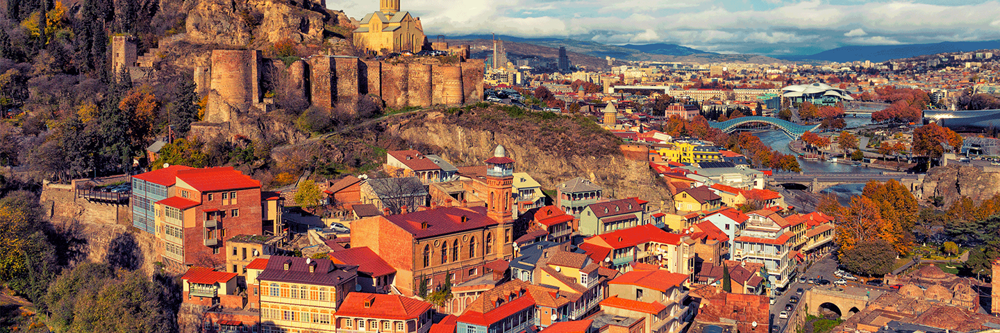
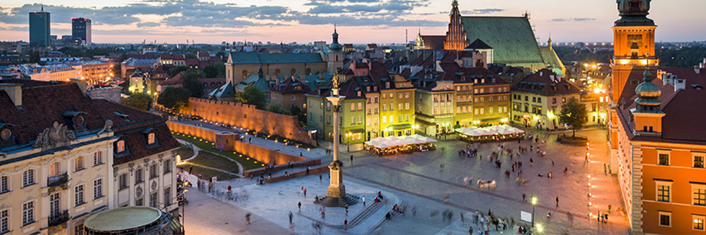

Sunset Travel


Top 5 Tips for traveling through Europe
Traveling through Europe can be difficult, to help with your travel we've created this list to help you enjoy your holiday a little more.
- 1: Check Visa Requirements
One guaranteed way to ruin your trip is being denied entry into the country you are visiting because you don’t have a tourist visa. While most countries in Europe don’t require a visa for short visits, it’s best to know which countries do.
Prior to your trip, a quick search online will find tourist visa requirements and whether you need to acquire a visa upon arrival at the airport or online prior to arrival. There are several websites online that list visa requirements, so find out ahead of time.
2: Travel in the Off Season
While you might dream of sunbathing upon the Mediterranean beaches during the summer months, so does the rest of Europe — causing overcrowded beaches and long queues at tourist attractions.
Traveling during the off season is the best way to avoid the crowds and save money on accommodations, airfare, train tickets and tours. Most of the main tourist attractions are open year-round, just make sure to check closing times as some might have shorter hours during the off-peak travel season.
3: Make Reservations in Advance
Making reservations in advance is the best way to secure accommodations and tours, especially in peak travel season. Booking airfare, hotels, train tickets, and tours in advance also ensures that you are getting the best price.
4: Bring Comfortable Shoes to Walk Everywhere
As one of the best ways to explore a city, you will do lots of walking during your European vacation, therefore having a pair of comfortable walking shoes is a must. After a long day of walking around the city, your feet will thank you!
5: Bring a Suitcase You Can Carry
Navigating the train station, walking on cobblestone streets, carrying your luggage up several flights of stairs at your hotel (often European hotels don’t have elevators) or accruing extra baggage fees, packing light in a suitcase you can carry is a must! You won’t need as much as you think and laundromats are readily available throughout Europe if you need to do laundry during your trip.
Where are we?
- •Paris - France
- •Frankfurt - Germany
- •Stockholm - Sweeden
- •Berlin - Germany